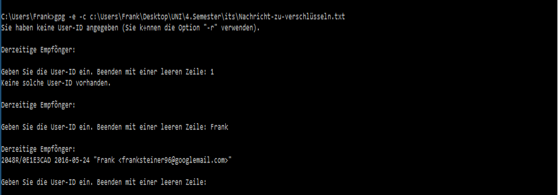
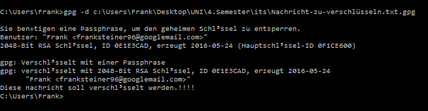

- Zuerst erstellen wir eine Textdatei, welche wir verschlüsseln wollen
Diese Datei hat folgenden Inhalt:
"Diese nachricht soll verschlüsselt werden.!!!!"
Und Speichern sie als "Nachricht-zu-verschlüsseln.txt", in "C:\Users\Frank\Desktop\UNI\4.Semester\its" ab.
- Um diese Datei symmetrisch zu Verschlüsseln, geben wir nun
gpg -e -c c:\Users\Frank\Desktop\UNI\4.Semester\its\Nachricht-zu-verschlüsseln.txt
in der console ein.
- Als nächstes müssen wir die User-ID (den Namen) des Empfängers eingeben, nun müssen wir noch eine Passphrase eingeben und es wird eine Verschlüsselte Datei erzeugt. (die Unverschlüsselte bleibt ebenfalls erhalten)


- Um die Nachricht wieder zu entschlüssel verwebdeb wird folgender Befahl verwendet
gpg -d c:\Users\Frank\Desktop\UNI\4.Semester\its\Nachricht-zu-verschlüsseln.txt.gpg.
Zum entschlüsseln müssen wir dann wieder unser Passwort eingegeben und bei erfolgreicher eingabe wird der Inhalt der Datei auf der Konsole ausgegeben.
